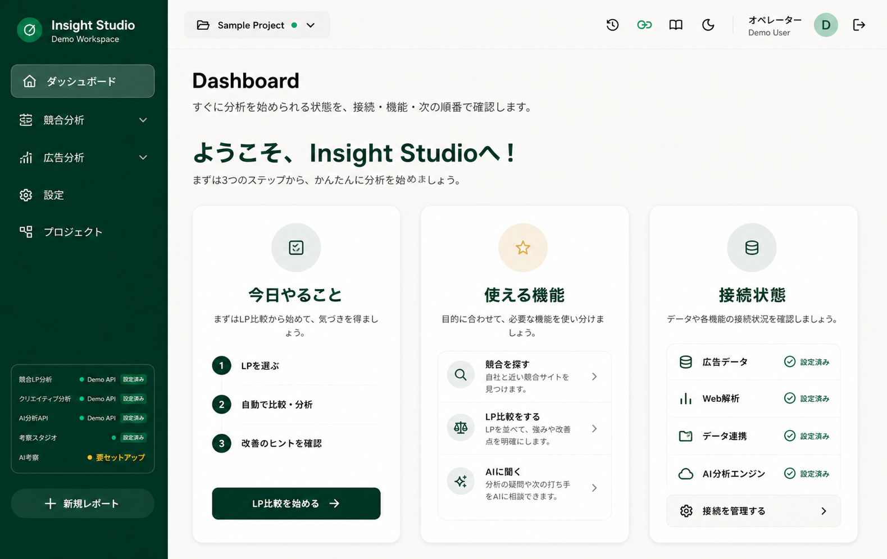
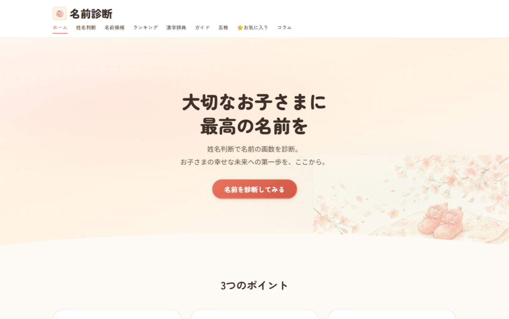
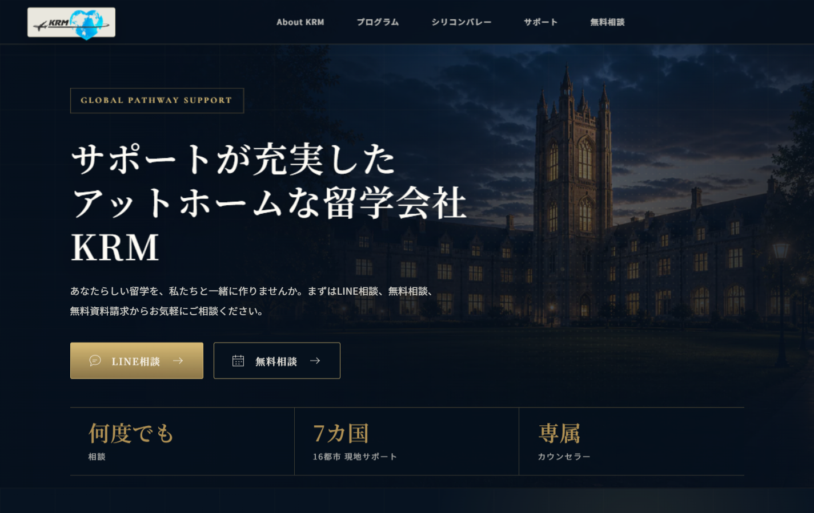
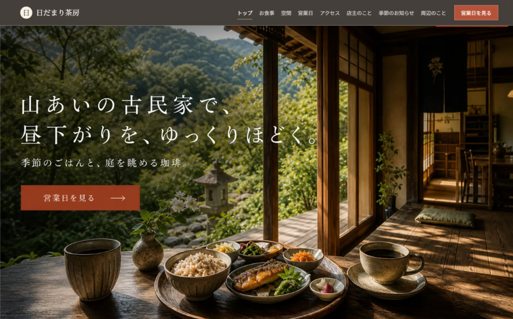
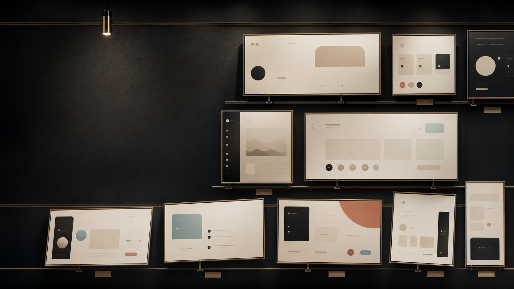
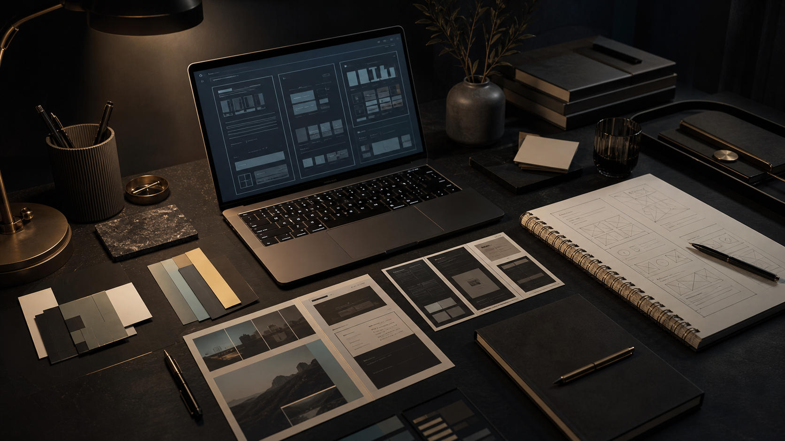
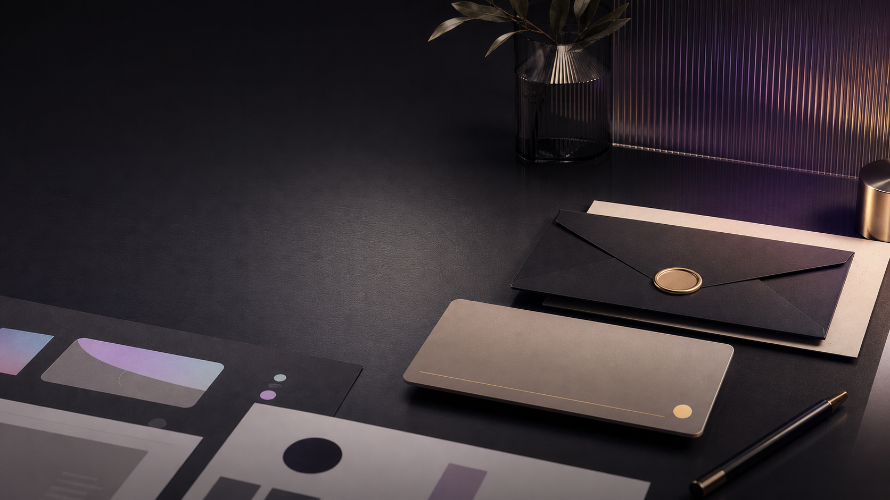

Insight Studio実画面で見る制作実績 Web / LP / Dashboard
実画面で伝わる Web制作実績
LP、Webサービス、業務ダッシュボードの初見理解と行動導線を整えた制作実績です。 画面の印象、対象ユーザー、設計意図まで短く見られるようにまとめています。

姓名診断
KRM留学LP
日だまり茶房Selected Works
どんなサービスか、何を設計したか。
Case Notes
クリック前に、判断できる見せ方へ。
スクショは飾りではなく、作品の種類、対象ユーザー、導線の意図を伝える入口です。 読ませる前に、まず画面で「見てみたい」と思える順番を設計しています。

実画面を先に見せる
LPは第一印象、サービスは入力から結果、ダッシュボードは業務の流れが見える画面を先に出します。
説明は短く、役割で書く
「作りました」ではなく、誰のどんな判断を助ける画面なのかを短く添えます。
CTAは作品ごとに変える
ただの公開リンクではなく、診断を試す、相談導線を見るなど、次に見る理由が分かる言葉にします。
動きは理解を邪魔しない
スクロール表示とhoverだけに絞り、動きを切っても同じ順序で読める構成にします。

About
見た目と目的を、同じ画面に置く。
きれいなだけのページではなく、誰が、どの順番で、何を判断するのかまで考えて制作します。 LPなら相談や予約へ進む理由を、Webサービスなら入力から結果までの迷いにくさを、業務画面なら次の行動につながる情報整理を大切にしています。
- 情報設計、UI、文言、導線をまとめて調整する
- 公開画面を見ながら、違和感を具体的に直す
- 実績紹介では、誤解を招く表現や過剰な見せ方を避ける

Contact
制作物を、伝わる形に整えます。
LP、Webサービス、業務画面の見せ方を、画面・文章・導線のセットで整えます。 まずは作品を見て、必要な情報が短時間で伝わるかを判断できるようにしています。
相談前に作品を見る